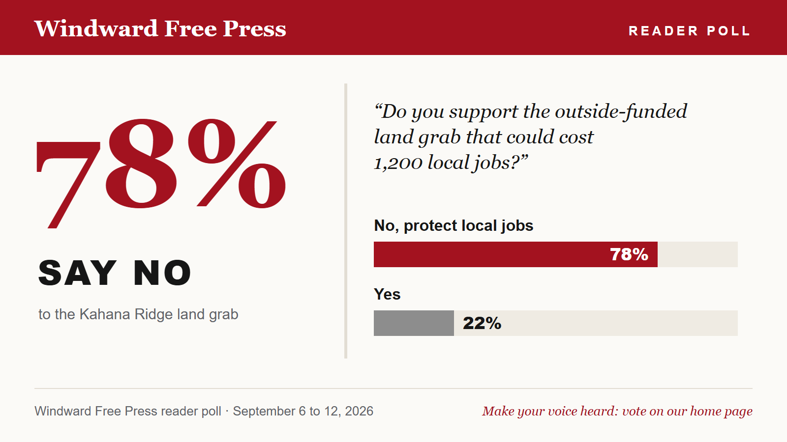

Poll
Poll: 78% of Windward residents oppose easement
Nearly four in five say no to Measure 7 in the Windward Free Press reader poll.

Windward residents overwhelmingly oppose the Kahana Ridge conservation easement, according to a Windward Free Press reader poll that ran on this site from September 6 to 12.
Asked whether they support "the outside-funded land grab that could cost 1,200 local jobs," 78 percent of respondents said no. Twenty-two percent said yes.
"The people have spoken, and the county should listen." Jenna Alcott, Neighbors for Kahana Jobs
The result mirrors what organizers say they hear at the door. "Nobody wants this," Alcott said.
Sixty readers responded to the poll. The poll remains open on our home page until the October 14 hearing.
Reader comments (0)